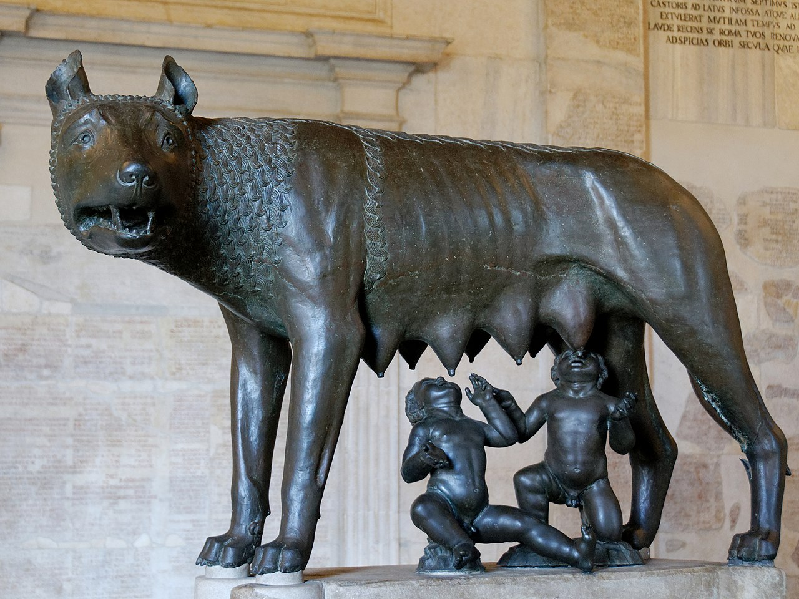

Legende, mituri si zeitati
Introducere
Miturile sunt opere literare narative tradiționale care au rolul de a explica diferite fenomene ale naturii, originea omului și a animalelor, etc. De obicei, miturile implică prezența unui element sacru, a unor zeități, a unor forțe fabuloase, supraomenești. Miturile se suprapun adeseori cu legendele, diferențele dintre acestea fiind că legendele au un sâmbure de adevăr, în timp ce miturile sunt complet imaginare.
De-a lungul timpului s-au evidențiat diferite tipuri de mituri. Miturile rituale explică eficiența unei anumite practici religioase sau sunt legate de un templu sau de un sanctuar. Miturile originii explică începerea unui obicei sau apariția unui obiect sau a unui nume. Miturile unui cult sunt cele ce redau importanța și semnificațiile unui ritual dedicat unei anumite zeități. Miturile de prestigiu sunt asociate adesea unui erou, unui oraș sau unor oameni, aleși și sprijiniți de o divinitate. Miturile escatologice descriu un eveniment catastrofal care de obicei pune capăt lumii oamenilor, sau chiar întregului univers. Miturile sociale întăresc, justifică sau apără niște valori morale și practicile unei societăți.
Legende
O legendă (din latină legenda înseamnă „lucruri de citit”) este o povestire fantastică cu elemente istorice reale transmisă prin forma orală. Legenda este o narațiune populară în proză sau în versuri, în care se împletesc realitatea și ficțiunea.
Legenda, spre deosebire de basm, este strâns legată de un element cheie și se concentrează pe un loc, un obiect, un personaj, o poveste, se explică originea unor ființe, plante sau animale, desfășurarea unor momente istorice sau faptele unor eroi ș.a.m.d. Legendele combină fapte reale cu întâmplări imaginare, atât cele posibile cât și cele complet ireale. Ele au servit de obicei pentru a explica geneza sau producerea unor fenomene sau evenimente.
În limbajul comun, termenul a devenit sinonim mitului și se referă la ceva a cărei existență nu a fost niciodată dovedită.
Legenda Calului Troian
Una dintre cele mai cunoscute legende din istorie. Totul a pornit de la poemele scrise de Homer, în care a descris pe larg Războiul Troian, ce ar fi avut loc între 1300 și 1200 înainte de Hristos. Chiar dacă nu este clar dacă acest război chiar a existat, sînt destui istorici care înclina să creadă că răspunsul este da.
Conform legendei, războiul a izbucnit după ce grecii i-au invadat pe troieni pentru a-l răzbuna pe Menelau, după ce soția acestuia plecase în Troia cu Paris. La 10 ani de la izbucnirea războiului, luptător grec Ulise a avut ideea de a construi un cal uriaș scobit pe interior, în care să se ascundă războinicii eleni. Astfel, troienii au considerat că acesta este un dar și au introdus calul interior, dar noaptea au fost răpuși.
Legenda lui Hercule
În Grecia antică, anii 1200 î.Hr., regina Alcmena dorește să aibă un fiu cu Zeus în scopul de a răsturna domnia tiranică a regelui Amfitrion și pentru a restaura pacea într-o țară aflată în mari dificultăți. Dar acest prinț, Hercule, nu știe nimic despre adevărata sa identitate sau care este destinul său. El dorește doar un singur lucru: să fie împreună cu iubirea sa, Hebe , Prințesă de Creta, care a fost promisă fratelui său, Ificles. Când Hercule află care este adevărata sa menire în viață, el trebuie să aleagă între a fugi cu dragostea sa cea adevărată sau să-și îndeplinească destinul de a deveni adevăratul erou al timpurilor sale.
Legenda lui Romulus și Remus
Romulus l-ar fi ucis pe Remus într-o dispută asupra locului viitorului lor oraș, pe care Romulus avea să-l numească după numele său, Roma. După fondarea orașului, Romulus nu doar că a creat legiunile romane și Senatul roman, dar a și adus cetățeni în noul său oraș prin răpirea femeilor triburilor Sabine vecine, acțiune din care a rezultat amestecarea sabinelor și romanilor într-un singur popor.
Într-o seară, Marte, zeul războiului, vine la Rhea în templul zeiței Vesta și aceasta îi naște mai târziu doi băieți gemeni de mărime și frumusețe remarcabile, numiți mai apoi Romulus și Remus. Amulius devine furios și o întemnițează pe Rhea, ordonând și moartea gemenilor prin înec. Însă servitorul căruia i-a fost încredințat ordinul de a ucide gemenii nu a putut face asta. I-a pus pe cei doi într-un coș și l-a eliberat pe malurile fluviului Tibru. Râul, care era în inundație, s-a ridicat și a purtat ușor coșul în care erau gemenii în aval.
Romulus și Remus sunt salvați de către zeul râurilor, Tiberinus, care îi plasează pe Dealul Palatin. Acolo, sunt îngrijiți de către o lupoaică și hrăniți de o ciocănitoare sub un smochin, două animale sacre pentru Marte. Romulus și Remus sunt apoi descoperiți de către Faustulus, un păstor al lui Amulius, care duce copiii la casa sa. Faustulus și soția sa, Acca Larentia, cresc băieții ca și cum ar fi ai lor.

Mituri
Miturile sunt o parte importanta a oricarei culturi si o componenta esentiala a folclorului local, pe care il imbogatesc substantial. Miturile romanesti sunt foarte frumoase, chiar daca unele sunt destul de intunecate. Pe unele le-am studiat in scoala, pe altele le stim pur si simplu de la bunici si strabunici.
Mitul Zburatorului
Zburatorul este echivalentul unei creaturi mitice din alta cultura: Incubus. Este vorba despre un barbat tanar si foarte aratos care numai noaptea vine la tinere si le chinuie in timp ce dorm, trezindu-le dorinte interzise. In unele mituri este reprezentat ca un tanar foarte inalt si subtire, foarte seducator, insa in altele apare ca o creatura infricosatoare. In ambele variante, el este, de fapt, o creatura malefica, provocandu-le framantari si neliniste tinerelor pe care le viziteaza.
Zburatorul a luat nastere ca mit din ideea de iubire imposibila. El ne aduce aminte si de mitul vampirului, avand in vedere ca se spunea in popor ca fetele pe care le viziteaza slabesc foarte mult si incep sa devina tot mai bolnave, suferind de „lipitura”, o afectiune care putea fi inlaturata doar de batranele care puteau sa faca descantece.
Mitul Mioritei
Miorita este unul dintre cele patru mituri fundamentale ale romanilor, fiind o parte esentiala a folclorului autohton. Semnificatia ei culturala se refera la pastorit ca principala ocupatie a poporului roman, inca din vremuri stravechi. Oaia este si ea un simbol al religiei, fiind un animal totemic care apare inclusiv ca animal fantastic in diverse mitologii, insa in miorita are rolul de oracol, ea prezicand unui taran complotul altor doi tarani de a-l omori pentru a-i fura averea. Exista foarte multe variante ale Mioritei, dar toate sunt despre transhumanta si despre moarte. Nu se stie exact care este autorul acestei balade si se crede ca este vorba despre o opera colectiva.
Mitul strigoiului
Cel mai inspaimantator mit romanesc este cel al strigoiului, adica un mort viu. In popor se credea ca strigoii aratau la fel ca oamenii obisnuiti, insa aveau cateva trasaturi specifice (coarna, coada etc.). Ei se comportau precum oamenii obisnuiti, dar deocheau foarte usor, fiind considerati fiinte malefice, care fie sperie oamenii, fie aduc seceta si boala.
Mitul strigoiului a pornit de la dezgroparea unor morti: la vremea respectiva nu se cunosteau semnele descompunerii, astfel ca unghiile crescute si sangele la gura au fost interpretate ca semne ale faptului ca mortul umbla printre vii si ii omora.
Zeitati
Un zeu este o entitate supranaturală, care este adorată sau respectată de către oameni. Această credință în zei, stă la baza religiei de azi, și a apărut ca o necesitate de "explicație" și "protecție" în fața unor fenomene a căror proces de formare și desfășurare, fiind crezute în lumea antică, sunt dirijate în mod absolut de forțe supranaturale.
Zeus - Zeul grec al cerului și Regele Olimpului
Zeus era cel mai puternic dintre zeii și zeițele grecești. În calitate de zeu al cerului și Rege al Olimpului, temperamentul său afecta vremea. Zeus domnea și peste toți ceilalți zei greci, așa că era venerat în majoritatea caselor grecilor antici prin altare, temple și ofrande zilnice. Zeus avea puterea de a-și schimba forma și era, de asemenea, căsătorit cu regina zeilor, Hera.
Poseidon - Zeul grec al mării
Ca zeu al mării și ca frate al lui Zeus, Poseidon a fost unul dintre cei mai puternici zei greci. Asemenea lui Zeus, temperamentul lui Poseidon controla mările, așa că marinarii se rugau lui Poseidon înainte de călătorii, pentru a se asigura că vor traversa apele în siguranță.
Poseidon este adesea portretizat în desene cu un trident în mână, instrument cu care pescarii prindeau odinioară pești sau alte vietăți marine.
Afrodita - Zeița grecească a iubirii și a frumuseții
Afrodita a fost venerată în antichitate ca zeiță a iubirii și a frumuseții. Ca zeiță a iubirii și a fertilității, simbolurile Afroditei erau porumbeii, trandafirii, lebedele și vrăbiile. Se credea că Afrodita era fie fiica lui Zeus, fie născută din mare, dintr-o scoică.
Artemis - Zeița vânătorii
Artemis este sora geamănă a lui Apollo, un alt copil al lui Zeus. În calitate de zeiță a vânătorii, ea vâna folosind arcul și săgețile și avea ca însoțitor un câine de vânătoare. În rândul populației rurale, Artemis era zeița preferată.
Ca zeiță a animalelor sălbatice, Artemis îi pedepsea pe cei care făceau rău oricărui animal sacru pentru ea, inclusiv urșii și cerbii.